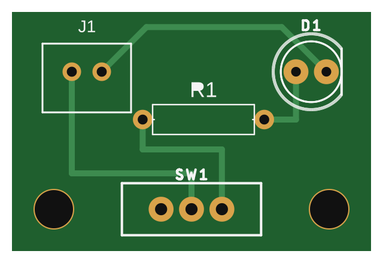
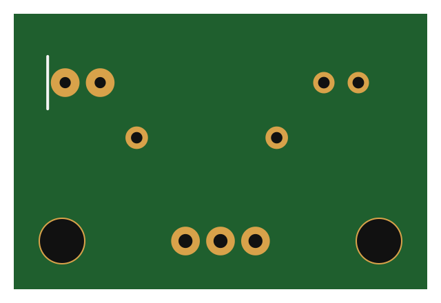
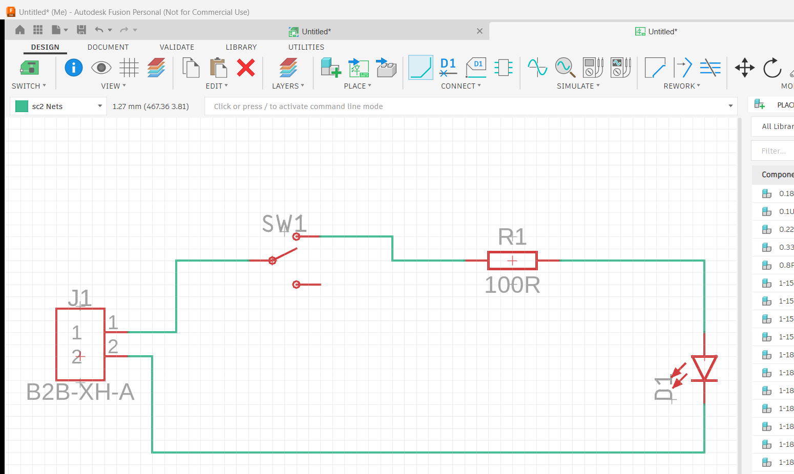
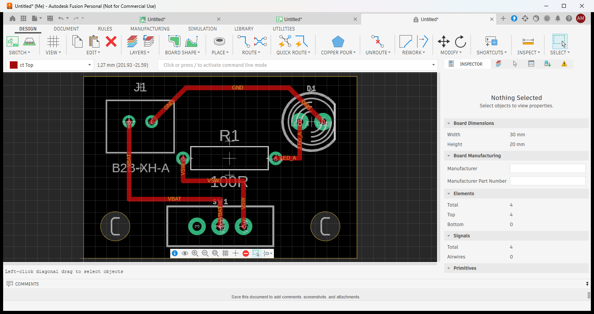

The first board from the chat. A battery connector, a slide switch, a resistor and an LED on a small two-layer board, then a printed case around it. The smallest real board that walks the whole road once: parts from the library, schematic, electrical check, board, design-rule check, factory files, the board in 3D, a case that fits. Not from a Babook lesson: it opens the electronics stage (the 3D course is on Babook, https://babook.co.il/courses/fusion360/).
✓
Ready to order the bare board
Every check below passes: Fusion's own, ours against the fab's limits, and the simulated factory.
Not verified yet: Ordered from a fab (its own review, a real electrical test)
Not verified yet: 3D PCB, and a case around it
Not verified yet: Soldered, lit; case printed and fitted
Each layer catches what the others cannot (how they work).
1. Fusion's ERC
clean
the schematic's electrical rules. Run 2026-11-18, Fusion 2706.1.17
2. Fusion's board check
clean
airwires, overlaps, Fusion's rules. Run 2026-11-18, Fusion 2706.1.17
3. Our board check
0 errors · 0 warnings
netlist, schematic = board, routing, the fab's limits. 3 approved, with reasons (below).
4. The simulated factory
0 errors · 0 warnings
the Gerbers and drill file, read as the fab does; the e-test. 6 approved, with reasons (below).
The circuit and the board
VBATVSWLED_AGND
Schematic, drawn from fusion/board.sch. Net names on the wires; a red cross marks a pin left free on purpose.Board, top view, drawn from fusion/board.brd; bottom copper shows through, faded. Copper is coloured by net.
What the factory receives
Drawn from the Gerber and drill files alone, as the fab's viewer draws them: copper under the mask, mask openings (gold), silkscreen, holes.

top

bottom, seen from below
In Fusion

schematic, screenshot from Fusion

board, screenshot from Fusion
The netlist, traced from intent to copper
Each net, followed through every stage. The intent is checks.json, written by hand from the agreed circuit, so a wire to the wrong pin shows up here.
Net
Connects
As intended
Board = schematic
Routed
Bare-board e-test
VBAT
J1.1, SW1.P(pad 2)
✓ yes
✓ same
✓ joined
✓ passes
VSW
SW1.O(pad 1), R1.1
✓ yes
✓ same
✓ joined
✓ passes
LED_A
R1.2, D1.A
✓ yes
✓ same
✓ joined
✓ passes
GND
D1.C(pad K), J1.2
✓ yes
✓ same
✓ joined
✓ passes
Left free on purpose: SW1.S.
Parts
Ref
Value
Footprint
Side
3D model
MPN
LCSC
D1
RED 5MM
LED_5MM
top
✓ yes
-
-
J1
B2B-XH-A
B2B-XH-A
top
✓ yes
B2B-XH-A(LF)(SN)
-
R1
100R
RESAD1016W63L850D250B
top
✓ yes
-
-
SW1
SPDT
SWITCH_SPDT_PTH_11.6X4.0MM
top
✓ yes
-
-
The same as BOM.csv and CPL.csv; the README says why each part was chosen.
Decisions: findings accepted, with the reason
An approval is a decision, not silence: the finding stays in the report, marked APPROVED. One that matches nothing any more is stale and is flagged.
Finding
Matches
Why it is fine
Seen in
SILK-WIDTH
R1
Tinkercad's R1 footprint draws 0.12 mm lines; they print faint, only a label. Our own library (backlog E3.5) fixes it
board check, factory (2)
SILK-WIDTH
0.120 mm
the same R1 footprint lines, measured on the Gerber
factory
SILK-PAD
R1
R1's lead marks touch its pads; the fab trims silk at pads, nothing else is affected
board check (2)
SILK-ON-PAD
11.0)
R1's pads (10.92 / 21.08, 11.0): the same lead marks, trimmed by the fab
factory (2)
NPTH-PLATED
board hole
M3 screw holes: plated is fine for a screw
factory (2)
LCSC
D1, J1, R1, SW1
a through-hole kit, soldered by hand: no assembly is ordered
SW1 pin S (pad 3) is connected to nothing (meant: checks.json unconnected_ok)
OK
NET-EXPECTED
the schematic's 4 nets are exactly the intended ones
OK
NETLIST
4 nets, 4 parts: no problems
OK match (1 line)
OK
MATCH
board and schematic agree: 4 parts, 4 nets, same pads
INFO parts (2 lines)
INFO
PART-MPN
no manufacturer part number (MPN) for D1, R1, SW1: the BOM names them by value only
OK
PARTS
4 parts: bodies apart, each with a 3D model
OK routing (1 line)
OK
ROUTED
all 4 signals are joined by copper, nothing stray
APPROVED rules (4 lines)
OK
BOARD-SIZE
board 30.00 x 20.00 mm, 1 outline loop(s)
APPROVED
SILK-WIDTH
silkscreen lines under 0.15 mm in R1 (they may print faint or not at all) (approved: Tinkercad's R1 footprint draws 0.12 mm lines; they print faint, only a label. Our own library (backlog E3.5) fixes it)
APPROVED
SILK-PAD
R1 silkscreen comes within 0.15 mm of pad R1.1 (the fab clips it) (approved: R1's lead marks touch its pads; the fab trims silk at pads, nothing else is affected)
APPROVED
SILK-PAD
R1 silkscreen comes within 0.15 mm of pad R1.2 (the fab clips it) (approved: R1's lead marks touch its pads; the fab trims silk at pads, nothing else is affected)
OK ruleset (1 line)
OK
RULESET
Fusion's rule set compared with the fab: 12 rules, 0 looser
profile 30.00 x 20.00 mm at (0.00, 0.00); same as the board
APPROVED drills (3 lines)
APPROVED
NPTH-PLATED
board hole (3.2 mm) is in the plated drill file: the fab will plate it; fine for a screw hole, otherwise ask for it non-plated (approved: M3 screw holes: plated is fine for a screw)
APPROVED
NPTH-PLATED
board hole (3.2 mm) is in the plated drill file: the fab will plate it; fine for a screw hole, otherwise ask for it non-plated (approved: M3 screw holes: plated is fine for a screw)
OK
DRILLS
11 holes in the drill file, each one a hole of the board
INFO copper (2 lines)
INFO
CLEARANCE
smallest top copper gap: 0.606 mm near (24.40, 16.87)
INFO
CLEARANCE
smallest bottom copper gap: 0.660 mm near (26.27, 15.00)
OK etest (1 line)
OK
ETEST
bare-board netlist = schematic: 4 nets, no opens, no shorts (9 pads probed)
OK mask (1 line)
OK
MASK
every pad has a solder-mask opening at least as large as the pad
APPROVED silk (3 lines)
APPROVED
SILK-WIDTH
thinnest top silkscreen line: 0.120 mm, the fab's minimum is 0.15 mm (approved: the same R1 footprint lines, measured on the Gerber)
APPROVED
SILK-ON-PAD
top: 2 silkscreen stroke(s) run into the mask opening of the pad at (10.92, 11.0); the fab removes silk there (approved: R1's pads (10.92 / 21.08, 11.0): the same lead marks, trimmed by the fab)
APPROVED
SILK-ON-PAD
top: 2 silkscreen stroke(s) run into the mask opening of the pad at (21.08, 11.0); the fab removes silk there (approved: R1's pads (10.92 / 21.08, 11.0): the same lead marks, trimmed by the fab)
APPROVED assembly (3 lines)
OK
BOM
BOM.csv: 4 lines, CPL.csv: 4 parts (JLCPCB columns)
APPROVED
LCSC
no LCSC part number for D1, J1, R1, SW1: JLCPCB cannot assemble these; solder them yourself or add an LCSC attribute (approved: a through-hole kit, soldered by hand: no assembly is ordered)
OK
ZIP
board_gerbers.zip: 10 files to upload
Every file
The repo holds the board; Fusion's cloud copy is only a vehicle, overwritten on every build.
how every check works, and what each finding means
Rebuild it from nothing
python scripts\fusion.py run examples\10_led_switch_board\circuit.py 120 # 1. schematic (new design)
python scripts\fusion.py run examples\10_led_switch_board\board.py 120 # 2. board, on the same design
python scripts\fusion.py run examples\10_led_switch_board\factory.py 300 # 3. Fusion's checks, save, export, Gerbers
python scripts\pcb_check.py examples\10_led_switch_board\fusion\board.brd # 4. our board check (no Fusion)
python scripts\factory_check.py examples\10_led_switch_board\factory # 5. the simulated factory (no Fusion)
Status, step by step
Step
Done
Parts found in Fusion's libraries, each with a 3D model
2026-11-16, Fusion 2706.1.17
Schematic from the chat: 4 parts, 4 nets drawn as one visible loop, read back equal to the spec, looked at (media/schematic.png)
2026-11-16
Electrical rules check (ERC) clean: Fusion's ERC found 0 (first run: "SW1 has no value", "D1 has no value"; values added)
2026-11-17
Board: 30 x 20 mm outline, parts placed, two M3 holes, routed; 0 airwires read back and in Fusion's inspector, looked at (media/board.png)
2026-11-16
Fusion's board check clean (errors panel empty)
2026-11-17
Our board check (pcb_check.py, JLCPCB's limits): netlist equal to the intent, board equal to the schematic, all routed, 0 errors, 0 warnings, 3 approved (R1's library silkscreen)
2026-11-17
Factory files from a CAM job (9 Gerber layers, 1 drill file), checked outside Fusion (factory_check.py): outline 30 x 20 mm, 11 holes all accounted for, simulated electrical test equal to the schematic (no opens, no shorts), mask on every pad, smallest copper gap 0.606 mm; BOM, pick-and-place, zip
2026-11-17
Ordered from a fab (its own review, a real electrical test)